23 September 2026 · branch station/scenes-20260923 · nothing deployed, nothing pushed
You asked for two things tonight. First: "the TV dynamic needs to come to Station, to free up the space of Chrome." Second: "the dock… moves things based on the width of things; things need to be more standard… I'm trying to get to the PCC and it's not particularly nice."
So: your twelve saved TradingView layouts are now Station pages, with the same names, the same order, the same number of charts and the same tickers. And the dock no longer moves. Every page button is the same width whatever the page is called, the left and right arrow keys move one page, there are arrows at both edges of the wall, and a pages list finds any page by its name or by a ticker on it — typing PCC offers the two pages that carry PCC.
Ten fixed layouts, plus the workbench, added to the nine screens the Station already had — twenty pages in all. Every screenshot below is a real browser at 1680 wide, with live data from the chart API.
| Page | Charts | Rows | Live tonight |
|---|---|---|---|
| MACRO | 6 | VIX, US10Y, CLUSD, BTCUSD, GCUSD, PCC | all six |
| INDEXES | 6 | MAGS, SMH, IWM, DRAM, IGV | four live · IGV not served |
| SECTORS | 8 | XLV, XLY, XLF, XLP, XLE, XLI, XLC, XLB | all eight |
| HOME 6 | 6 | SPY, QQQ, NVDA, BE, MU, NBIS | all six |
| PAGE 2 | 6 | TSM, SNDK, GOOGL, IREN, AVGO, CRWV | all six |
| PAGE 3 | 6 | AAPL, LRCX, AMZN, AMD, MSFT, META | all six |
| OTHER LC | 8 | ASML, META, PLTR, ORCL, SPCX, HOOD, TSLA, SHOP | all eight |
| OTHER SC | 8 | ALAB, WULF, CRDO, SMR, SMCI, OKLO, ASTS, USAR | all eight |
| BLUE CHIP | 6 | WMT, JPM, COST, BAC, CAT, MRVL | all six |
| EXTRAS | 2 | MRVL, NVTS | MRVL live · NVTS not served |
| WORKBENCH | 2 | MU, QQQ with your cloud stack | both |
Three of your TradingView names are spelled differently in our own data, so they are translated once,
in the page: USOIL → CLUSD, GOLD → GCUSD, TSX:BOFA → BAC. Nothing
else was renamed, reordered or quietly dropped.
Nothing was removed. These are the pages that cover similar ground, kept side by side so you can decide later which one you actually reach for:
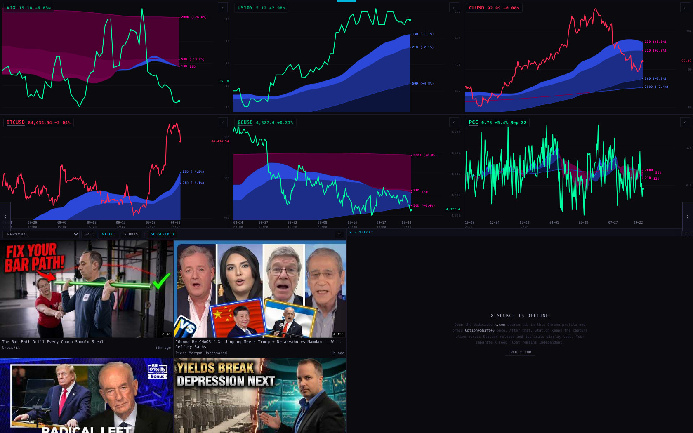
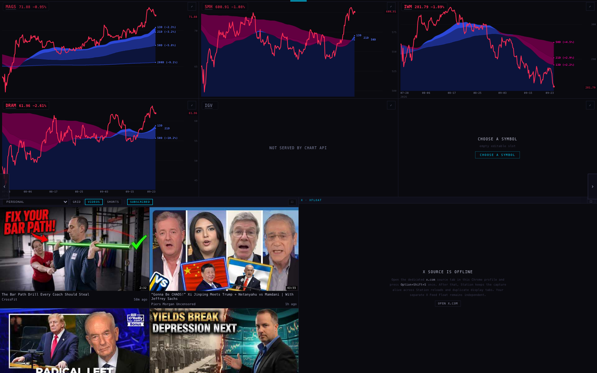
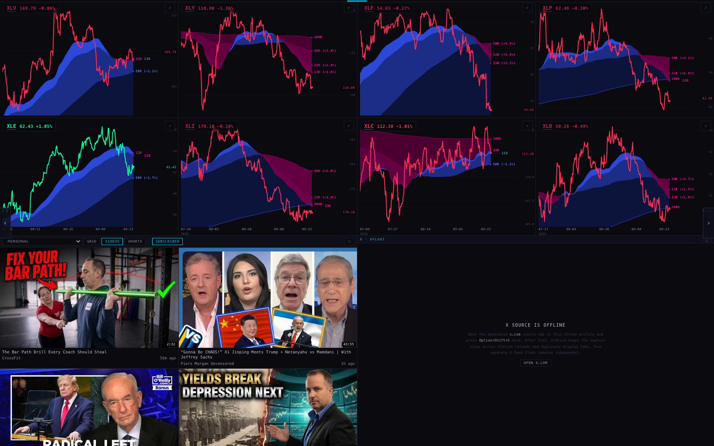
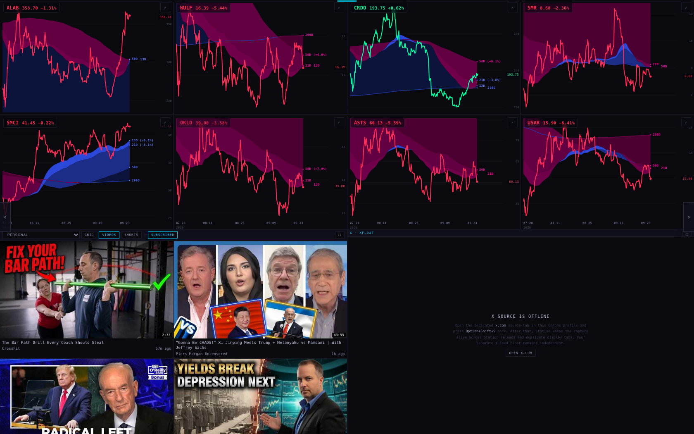
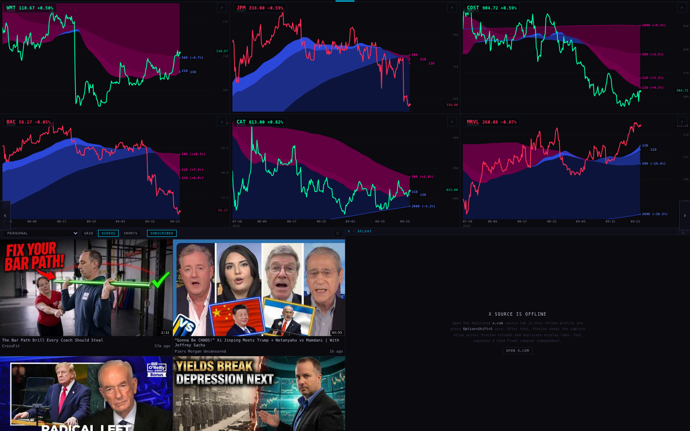
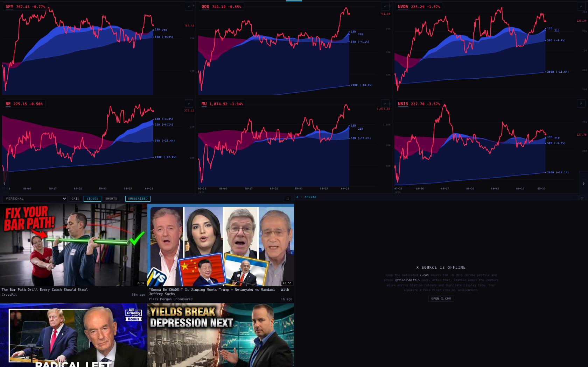
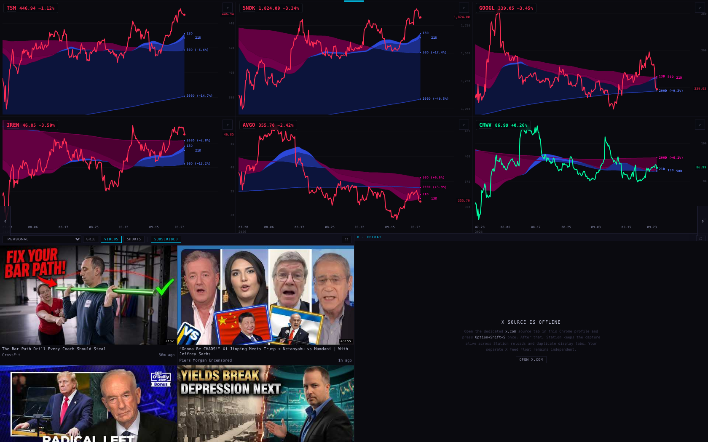
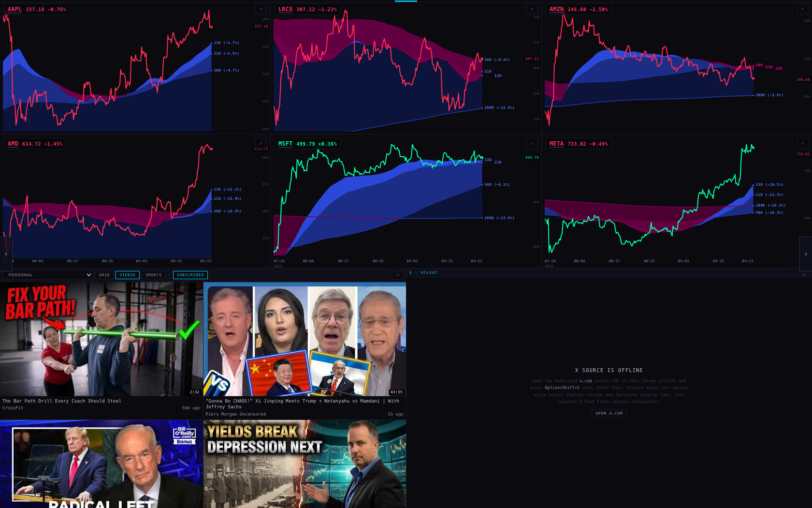
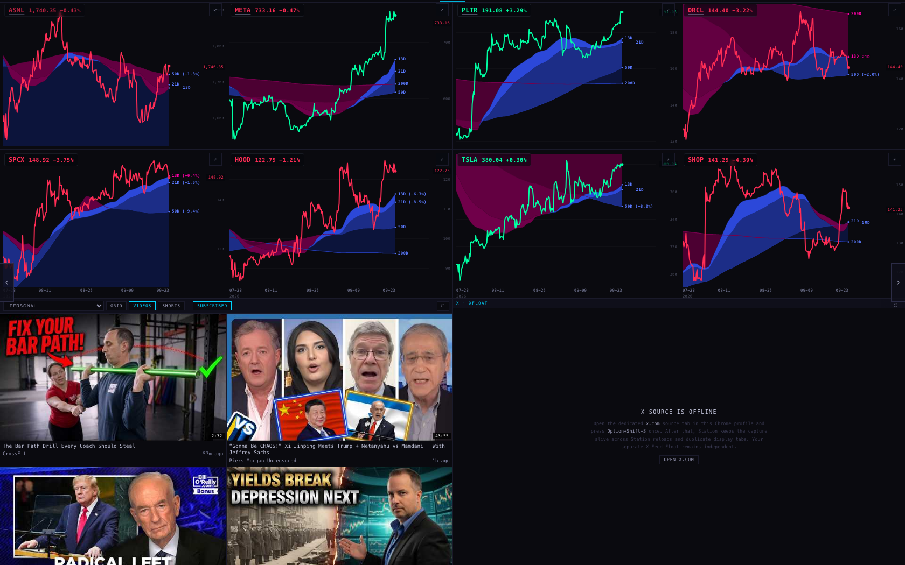
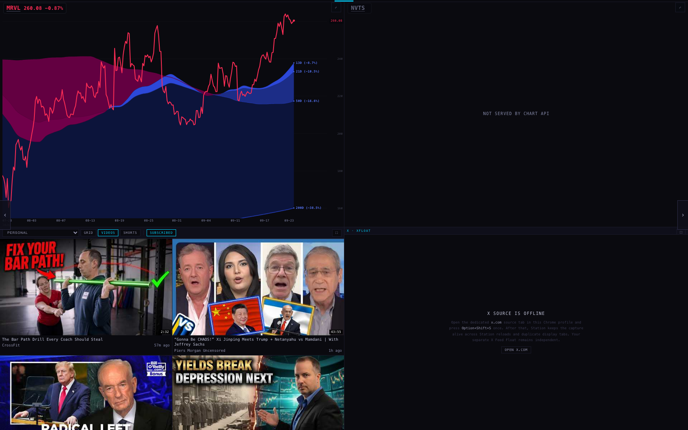
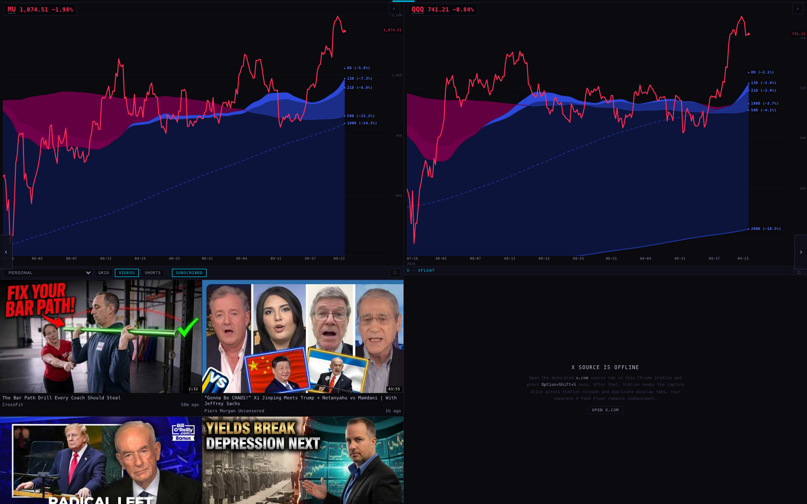
You said new copies of the oscillator workbench are coming tonight or tomorrow. So a workbench is now a type of page, not a one-off: it is a list of charts, each with a symbol, a named study stack, and optionally its own timeframe. Adding tomorrow's version is adding an entry to a list — no new code.
The stacks that exist tonight, all built from the Station's own cloud ribbon:
Each chart writes its stack into its own address, so a workbench slot can never quietly inherit the wall's cloud switch and become a different study than the page says it is. A slot with its own timeframe overrides the one timeframe bar for that slot only; without one, it follows the wall like everything else.
When you send the new layouts, the honest limit is this: the Station can only draw the indicators it owns. If your new workbench uses TradingView studies we do not compute, I can name them on the page and keep the TradingView button beside each chart, but I cannot draw them from our data until they exist here.
Measured in a real browser at four widths. A page button is a fixed 81 pixels whatever the page is called; the rail is a whole number of buttons wide; and the strip slides by whole buttons to keep the current page in the middle.
| Screen width | Page buttons shown | Every button | Strip height | Shrunk to fit? | Anything move on a page change? |
|---|---|---|---|---|---|
| 2560 | 17 | 81 px | 34 px | no | nothing moved |
| 1920 | 9 | 81 px | 34 px | no | nothing moved |
| 1680 | 6 | 81 px | 34 px | no | nothing moved |
| 1512 (MacBook) | 4 | 81 px | 34 px | no | nothing moved |
"Nothing moved" is measured, not claimed: I recorded the left edge of every section of the strip, pressed the right arrow key twice to change page twice, and compared. At all four widths every section was in exactly the same place, and the readouts now sit in fixed cells so "screen 9 / 20" and "screen 12 / 20" take the same room.
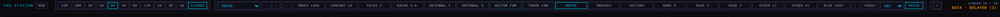
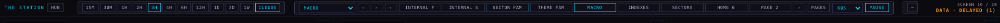
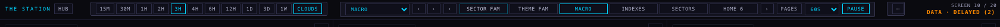
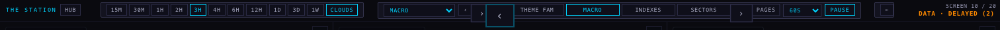
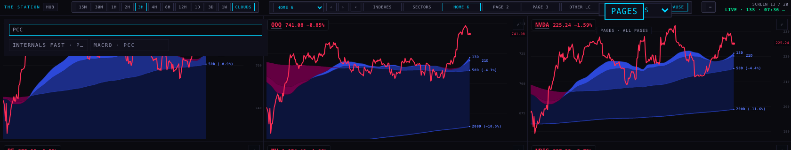
scintilla-massive-chart-api.fly.dev — the same source the Station always used. I wrote nothing
to any price table and ran no acquisition.scintillahub.ai origin the API requires, because a local page is not
that origin. Those were the ordinary public reads the deployed Station makes; nothing was written.These two are the only symbols in your twelve layouts the chart API does not carry. Asked directly, it
answers SYMBOL_NOT_TRACKED — "symbol not in the tracked universe". Its universe is 364 names.
I left both in their pages on purpose, so the page is your page: the slot says NOT SERVED BY CHART API instead of vanishing, and it will simply start drawing the day the universe carries it.
What it takes, in order — I wrote step 1 and stopped, because the rest are production writes this lane is not allowed to make:
instrument_map table. Written as a migration with its rollback:
universe/2026-09-23_add_igv_nvts.sql.ab8f7965…, and three places
pin those and must move with them: two constants in the Station's own provider file and the chart API's
settled-universe settings.So adding a name is additive in the database and not additive downstream. That is why I did not half-do it.
Tests: 467 in the Station suite. 18 were already failing on production before tonight; after this work the same 18 fail and no others, and 13 new tests cover the pages, the workbench, the rail geometry and the jump list.